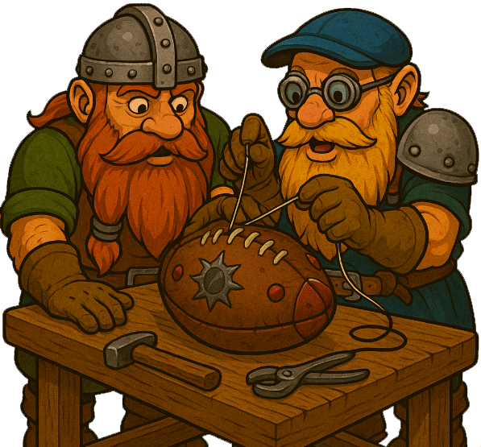

En el ranking anual a cada jugador se le resetea a principio de cada año su ranking a 150, y varía con cada partido que juegue independientemente de la raza con que lo haga.
En el ranking histórico cada jugador empieza con un ranking de 150 con cada raza, y varía con cada partido que juegue independientemente de la raza. Este ranking es histórico y nunca se resetea.
En el ranking histórico por raza cada jugador empieza con un ranking de 150 con cada raza, y varía con cada partido que juegue con esa raza. Este ranking es histórico y nunca se resetea.
Las clasificaciones incluyen solo los jugadores que han indicado en la web de la NAF que son españoles y en los rankings de NAF Mundial con los entrenadores de todo el mundo. Posteriormente se puede filtrar por tramos de Win Ratio, por número NAF, por nick, Comunidad Autónoma o País. Entre paréntesis aparece la clasificación entre los jugadores con la misma CCAA/País. En caso de no tener datos de la CCAA del jugador, aparecerá como Apátrida.
Si estás en el listado como Apátrida y quieres indicar cuál es tu CCAA, ponte en contacto.
Las clasificaciones no tienen un periodo regular de actualización, pero se intentará que se actualice de manera constante y sin periodos muy extensos entre una actualización y otra.